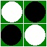

REVERSI
The game
Reversi (a.k.a. Othello) is a game based on a 8x8 board, played between a player and the computer, or two players, by adding pieces with two sides: black and white.
At the beginning of the game there are 4 pieces on the center of the board, the player with the black pieces makes move first.
Each player must place a piece in a position that there exists at least one straight (horizontal, vertical, or diagonal) line between the new piece and any other piece of the same color, with one or more contiguous opposite pieces between them.
The program
The menu of the program gives you the following possibilities;
- Game - New - Human: Start a new game of two players
- Game - New - AI: Start a new game of a player and the computer
- Game - Save: Save the current game
- Game - Load: Load a previously saved game
- Game - Undo: undo the last move
- Game - Hint: Let the computer decide the next step
- Level: Select the level of game, between 1 (easy) and 5 (difficult)
- Theme: Change the display style